This tutorial considers wave propagation in water layers from 1.0 to 5.0km thick in order to assist the interpretation of OBS data. The ocean model is based on the AK135-F model developed at the Australian National University. The model was truncated to consist of just the water layer, crust and upper mantle and then converted to the MODEL96 format of Computer Programs in Seismology (CPS). The Qκ and Qμ were converted to QS using the relations Q-1P = L Q-1μ + (1 -L) Q-1κ and QS = Qμ where L = (4/3)(VP / VS)2 (Ben-Menahem and Singh, 10.03; Dahlen and Tromp, 9.59 and 9.60).
Thus the AK135F_AVG entry
Spherical average structure
Depth density P vel S vel Q kappa Q mu
km Mg/km3 km/s km/s
0.00 1.0200 1.4500 0.0000 57822.00 0.00
3.00 1.0200 1.4500 0.0000 57822.00 0.00
3.00 2.0000 1.6500 1.0000 163.35 80.00
3.30 2.0000 1.6500 1.0000 163.35 80.00
3.30 2.6000 5.8000 3.2000 1478.30 599.99
10.00 2.6000 5.8000 3.2000 1478.30 599.99
10.00 2.9200 6.8000 3.9000 1368.02 599.99
18.00 2.9200 6.8000 3.9000 1368.02 599.99
18.00 3.6410 8.0355 4.4839 950.50 394.62
43.00 3.5801 8.0379 4.4856 972.77 403.93
80.00 3.5020 8.0400 4.4800 1008.71 417.59
80.00 3.5020 8.0450 4.4900 182.03 75.60
120.00 3.4268 8.0505 4.5000 182.57 76.06
120.00 3.4268 8.0505 4.5000 182.57 76.06
165.00 3.3711 8.1750 4.5090 188.72 76.55
210.00 3.3243 8.3007 4.5184 200.97 79.40
210.00 3.3243 8.3007 4.5184 338.47 133.72
260.00 3.3663 8.4822 4.6094 346.37 136.38
310.00 3.4110 8.6650 4.6964 355.85 139.38
MODEL.01
AK135-F model converted to layers
ISOTROPIC
KGS
SPHERICAL EARTH
1-D
CONSTANT VELOCITY
LINE08
LINE09
LINE10
LINE11
H(KM) VP(KM/S) VS(KM/S) RHO(GM/CC) QP QS ETAP ETAS FREFP FREFS
3.000 1.450 0.000 1.020 0.000 0.000 0 0 1 1
0.300 1.650 1.000 2.000 108.161 80.000 0 0 1 1
6.700 5.800 3.200 2.600 927.336 599.990 0 0 1 1
8.000 6.800 3.900 2.920 876.141 599.990 0 0 1 1
25.000 8.037 4.485 3.611 606.789 399.275 0 0 1 1
37.000 8.039 4.483 3.541 624.909 410.760 0 0 1 1
40.000 8.048 4.495 3.464 115.086 75.830 0 0 1 1
45.000 8.113 4.504 3.399 116.831 76.305 0 0 1 1
45.000 8.238 4.514 3.348 121.781 77.975 0 0 1 1
50.000 8.391 4.564 3.345 213.266 135.050 0 0 1 1
50.000 8.574 4.653 3.389 218.446 137.880 0 0 1 1
50.000 8.756 4.740 3.434 224.376 141.070 0 0 1 1
50.000 8.956 4.940 3.434 224.376 141.070 0 0 1 1
This is just a test model.
In the examples developed below the models will be given with names like OCEAN_4.0.mod where the 4.0 indicates that the water layer is 4.0km thick instead of the original 3.0km. The examples will consider wave propagation with water layer thicknesses of 1.0, 2.0, 3.0, 4.0 and 5.0km.
Download the script OCEAN1.tgz and
unpack it using the command
gunzip -c OCEAN1.tgz | tar xvf - cd OCEAN1
ls -F OCEAN_SW/ OCEAN_WK/
cd OCEAN_SW DOITSW
The purpose of this section is to compute the theoretical fundamental and first higher mode dispersion for Love and Rayleigh waves in each of the models. The computations and results will be in the sub-directories with names such as swDIR_5.0. The result will be the eigenfunction files slegn96.egn and sregn96.egn which are used by the program sdpegn96 to plot the dispersion. The shell script DOITSW performs the computations and creates the plots, which will be a superposition of the phase velocity (solid curve) and group velocities (dashed curve). The DOITSW assigns a different color to each depth from red at 1.0 to blue at 5.0 km. The individual plots in each sub-directory are named R.PLT and L.PLT. At the top level there are ALLL.PLT and ALLR.PLT.
For a water thickness of 5.0km, the dispersion plots are shown in
the next figure.
|
Love wave fundamental and first higher mode |
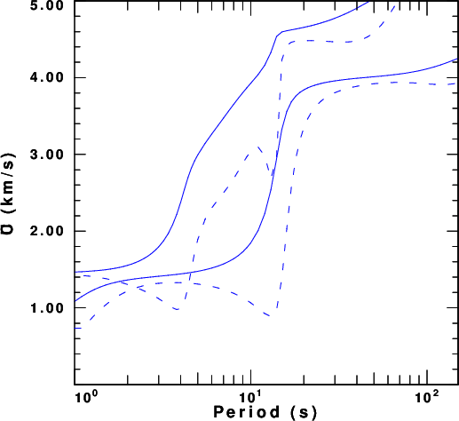
Rayleigh wave fundamental and first higher mode |
| 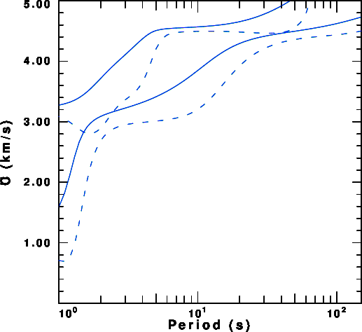
Composite Love wave fundamental and first higher mode.
|
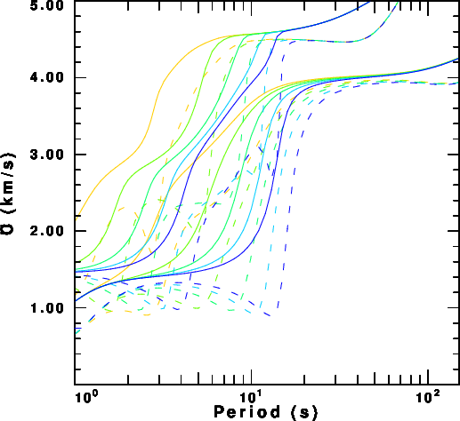
Composite Rayleigh wave fundamental and first higher
mode. |
The model used is generic. It consists of a water layer, a sediment layer and a two layer crust. One might perturb the model to see the effect of the sediment thickness on the dispersion. It seems as if more can be learned about structure from an observation of the Love wave than from the Rayleigh wave.
After completing the surface wave computation, since we will use
the eigenfunctions later when analyzing the dispersion using do_mft,
enter the following command in the OCEAN_WK directory.
DOITWK
This script will create a sub-directory for each source depth. The computations and results will be in the sub-directories with names such as wkDIR_5.0. In order to make synthetics that can be used for interpretation of ambient noise from OBS seismometers on the sea bottom and, at the same time, account for efficient computation, the source is placed at a depth of 100m (0.1km) beneath the water-solid boundary and the receiver at a depth of 50m (0.05km) beneath the boundary. At long periods, this slight shift from a value of 0.0 will not affect the synthetics. Note: To obtain the Green's functions for a pressure field in the water, the receiver should be slightly above the boundary in the water.
The script will compute all Green's functions, but to understand the results of ambient noise analysis, the cross-correlation and stacking of the Z components (ZZ) will theoretically be the ZVF (vertical component observation due to a vertical force) Green's function, although the amplitude spectrum will be different. Part of this signal will be the Rayleigh wave. If ambient noise is obtained from the great circle path radial components (RR), RHF (radial due to horizontal force) is the Green's functions to consider, and finally THF will be appropriate for the TT cross-correlation. The purpose of these synthetics is to see what group and phase velocities may be obtained from the ambient noise results.
The script DOITWK will compute synthetics at distances of
100, 200, 300, 400 and 500km. As an example the next figure
compares
the ZVF, RHF and THF Green's functions at a distance of 500 km.
The next figure displays a record section of the THF and ZVF
Green's functions for a water thickness of 5.0km.
| 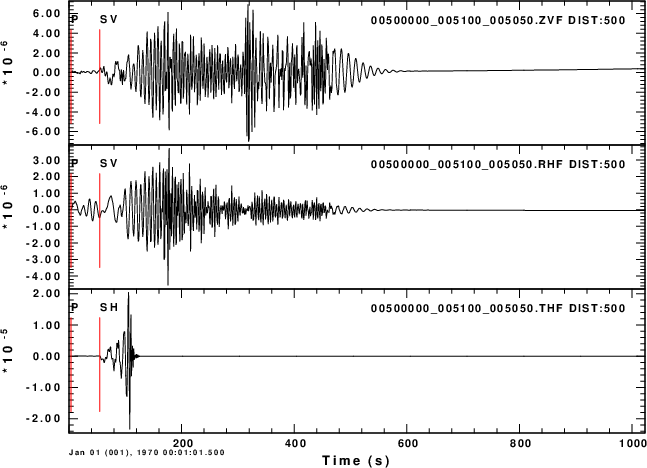
ZVF, RHF and THF Green's functions at a distance of 500km |
| 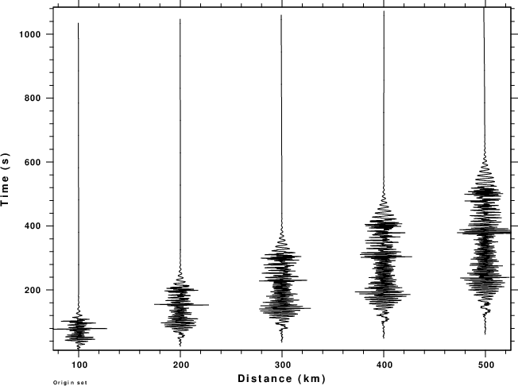
ZVF record section |
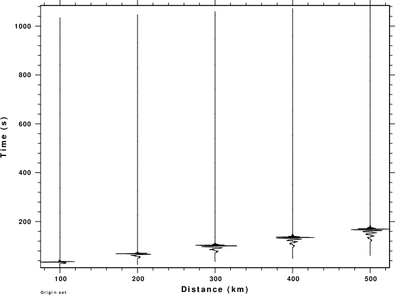
THF record section |
Finally consider the THF and RVF Greens functions at a distance of
500km for different source depths.
| 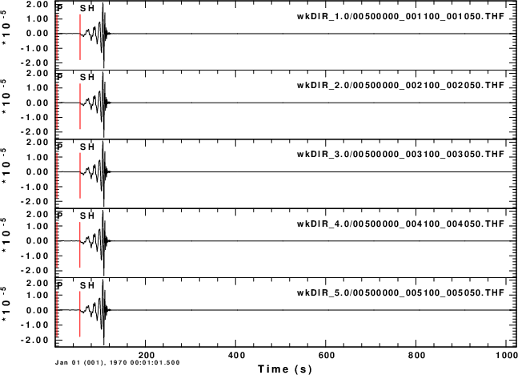
THF at 500km for source depths of 1.1, 2.1, ..., 5.1km |
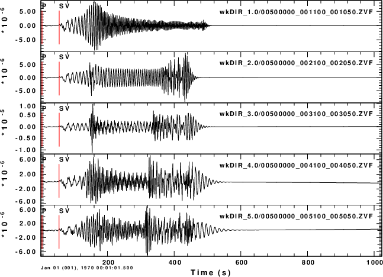
ZVF at 500km for source depths of 1.1, 2.1, ..., 5.1km |
A use of the ambient noise empirical Green's functions is to determine group and phase velocity. The do_mft applies a multiple filter analysis to the seismograms. If shell scripts MFTDOOVERLAY and PHVDOOVERLAY have been created, then it is possible to overlay the theoretical model curves onto the dispersion estimate using the seismogram. When working with real data, this feature is used to determine an acceptable range of good observations. In this case with synthetics, this overlay permits one to understand the effects of the model on the determination of these velocities.
The next set of figures are screenshots of a set of do_mft windows. Comments will be placed at the bottom of each figure. In this example, the water is 5.0km deep, and we consider two separate runs - one for the ZVF traces and the other for the THF traces. The ZVF will be processed in detail at first, and just the important plots for the THF Green's functions will be displayed.
To keep the number of figures small, I will just indicate what
"button" to press on each page. We will start with the ZVF
synthetics.
cd wkDIR_5.0 do_mft -G -IG -T *ZVF
Here are the steps taken to obtain the figures.
| 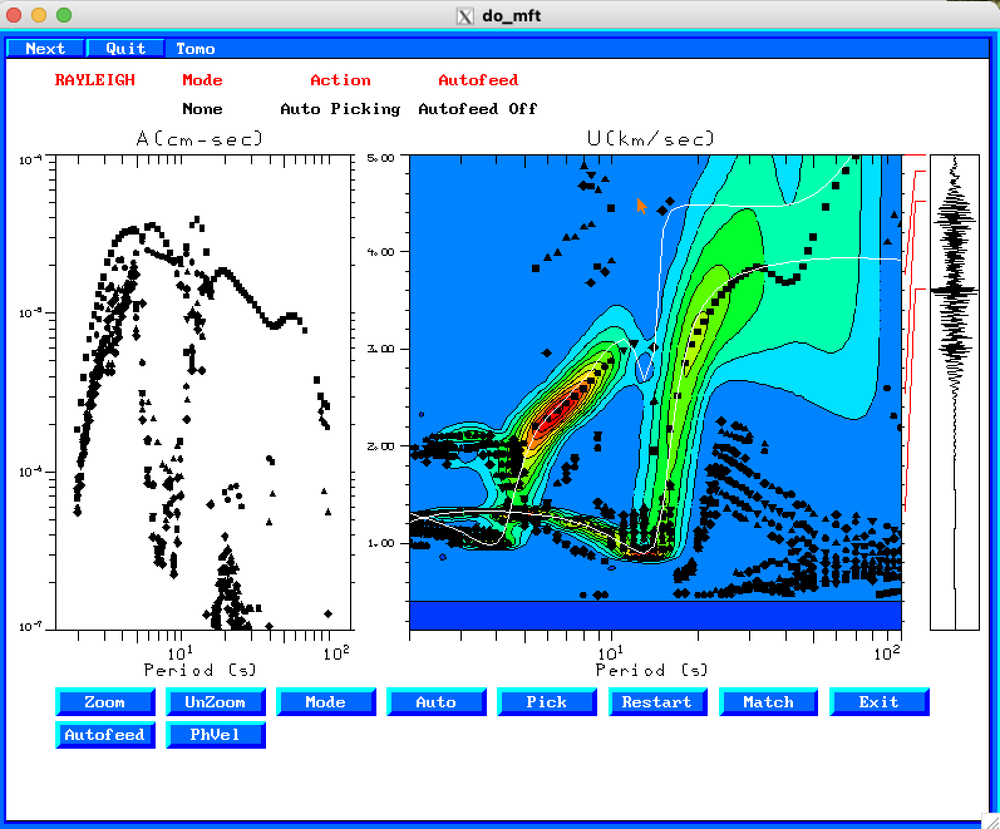 |
| 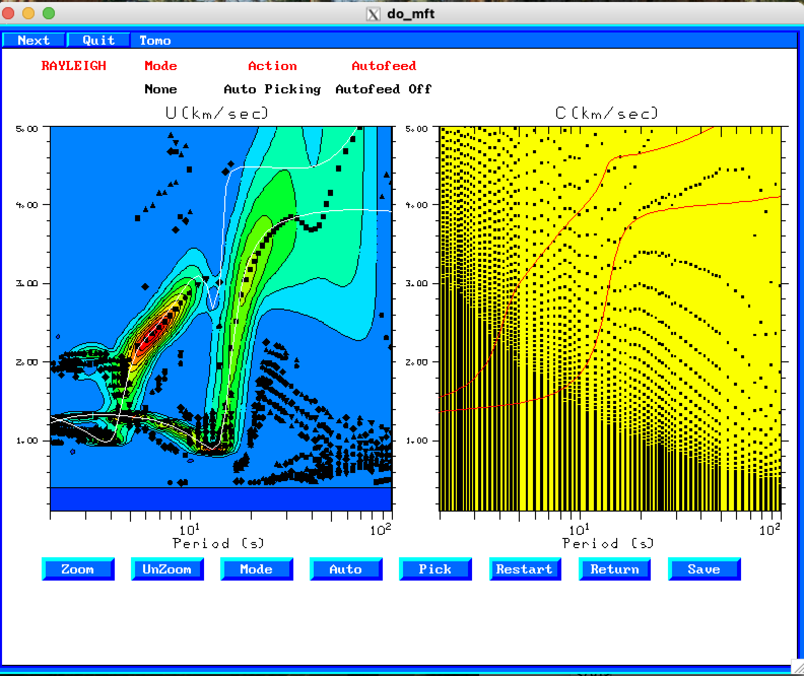 |
If we examine the THF Green's function which is related to the TT
analysis, we obtain the following two figures after entering
do_mft -G -IG -T *THFand being sure to select "Love" for "Type" on Page 3.
| 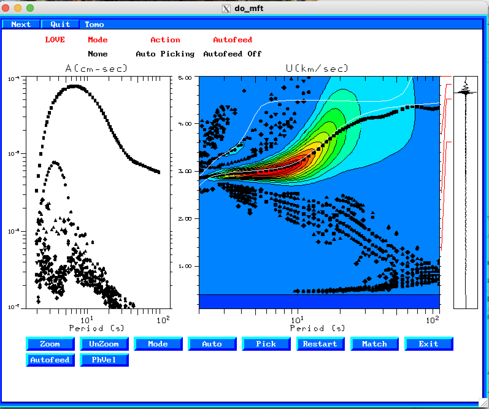 |
| 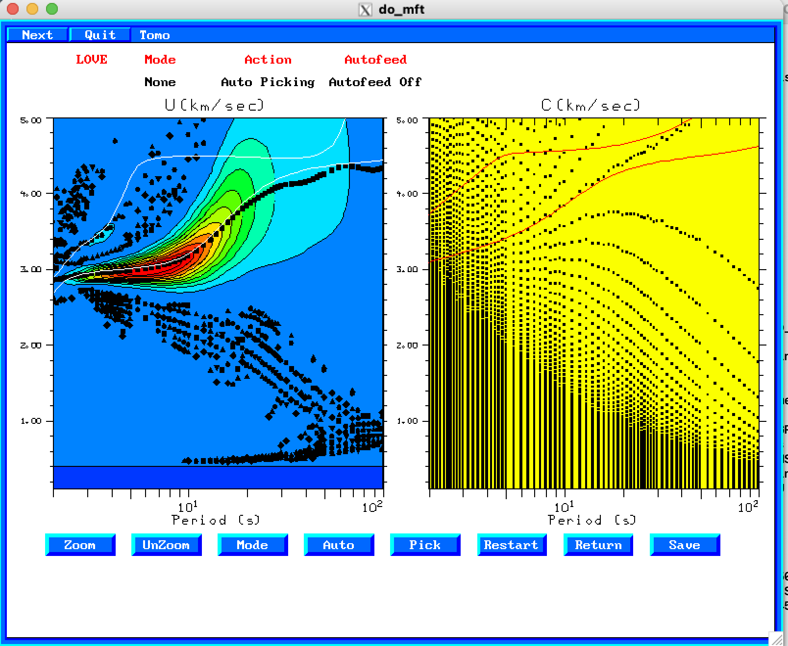 |
the following links describe the processing scripts in detail.